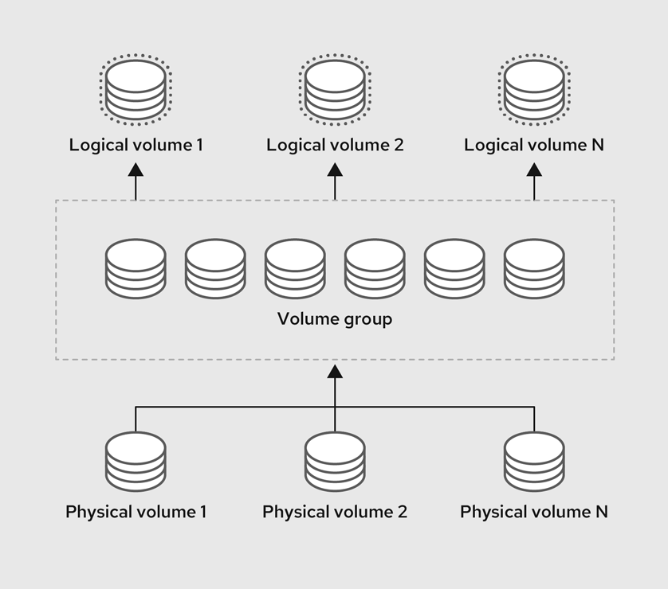
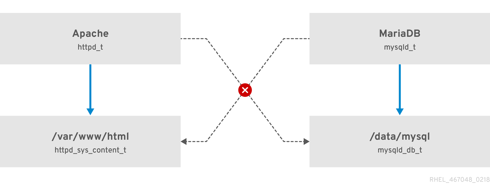

Warstwy abstrakcji w LVM
Fizyczne dyski lub partycje (Physical Volumes) są łączone w jedną wspólną pulę pamięci (Volume Group), z której następnie wydziela się wolumeny logiczne (Logical Volumes) pod systemy plików XFS lub ext4.
Egzamin EX200 - Red Hat Enterprise Linux 9
Szybkie przypomnienie najważniejszych komend i struktur plików konfiguracyjnych wymaganych na egzaminie RHCSA.
Wyświetlanie wszystkich modułów
Spróbuj wpisać inne zagadnienie (np. xfs, cron, nmcli) lub
zresetuj filtr.
Diagramy z dokumentacji RHEL 9 obrazujące LVM oraz SELinux.

Fizyczne dyski lub partycje (Physical Volumes) są łączone w jedną wspólną pulę pamięci (Volume Group), z której następnie wydziela się wolumeny logiczne (Logical Volumes) pod systemy plików XFS lub ext4.

Polityki SELinux zamykają usługi w osobnych domenach. Nawet jeśli proces serwera Apache
zostanie przejęty przez złośliwy skrypt, SELinux zablokuje mu dostęp do katalogu
/tmp oraz plików bazy danych MariaDB.
Najważniejsze zasady przed zakończeniem pracy na maszynie egzaminacyjnej.
Błędny wpis w /etc/fstab zatrzyma start systemu w trybie emergency
mode. Po każdej edycji pliku należy wykonać polecenia
systemctl daemon-reload oraz mount -a. Jeśli polecenie nie
zwróci błędu, konfiguracja jest poprawna.
Domyślnie w RHEL system plików XFS wspiera wyłącznie powiększanie.
Zmniejszanie rozmiaru jest możliwe dla systemu plików
ext4.
Korzystaj z podręcznika systemowego. Wpisz
man -k słowo_kluczowe, a po otwarciu
przewiń na sam dół (klawisz G), gdzie w sekcji EXAMPLES
znajdują się gotowe wzorce komend (np. w man semanage-fcontext).